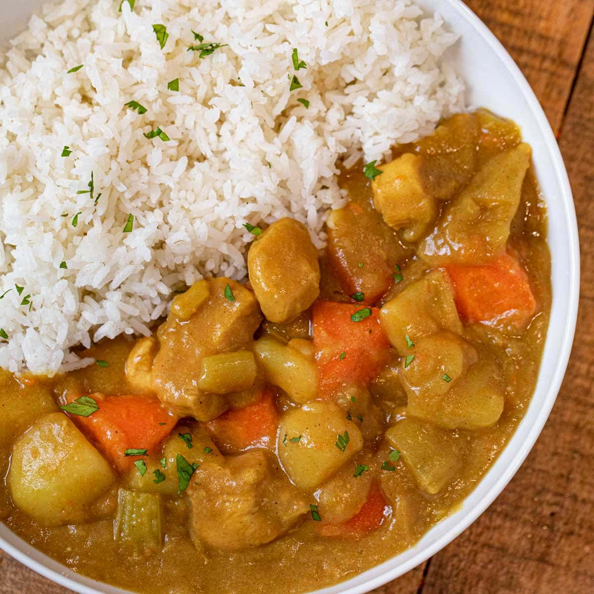

Japanese curry is commonly served in three main forms: curry over rice, curry udon, and curry bread. It is one of the most popular dishes in Japan. The very common "curry rice" is most often referred to simply as "curry". Along with the sauce, a wide variety of vegetables and meats are used to make Japanese curry.
Ingredients
- Chicken, chopped (450g)
- Medium Onions, minched (350g)
- Medium Carrots, chopped (100g)
- Medium Potatoes, chopped (150g)
- Vegetable Oil (15 mL)
- Water (540 mL)
- S&B Golden Curry Sauce Mix 92g (1 pack)
Steps
- Saute meat and vegetable items in a large skillet with medium heat for approximately 5 minutes.
- Add water to same skillet and bring to a boil. Reduce the heat, cover with lid, and simmer until all ingredients are tender (approximately 15 minutes).
- Turn heat off, break S&B Golden Curry Sauce Mix into pieces and add to the same skillet. Stir until sauce mix is completely dissolved.
- Simmer for approximately 5 minutes, stirring frequently.
- Turn off heat, serve hot over steamed rice.
Back to Top
Back to Main Page